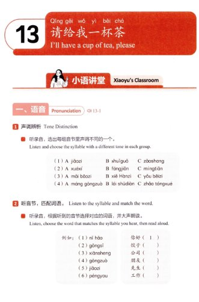
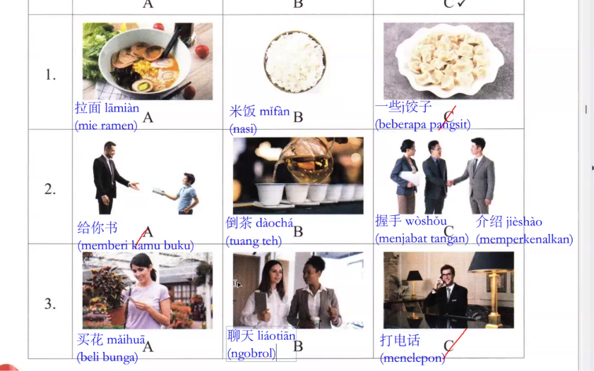
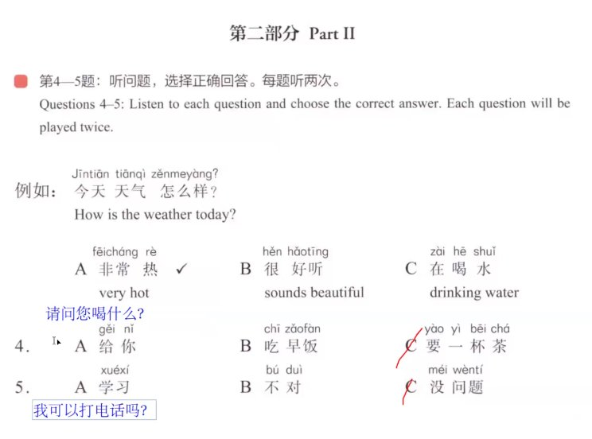
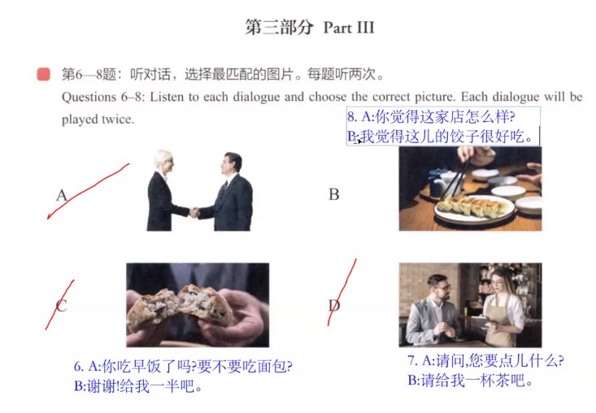
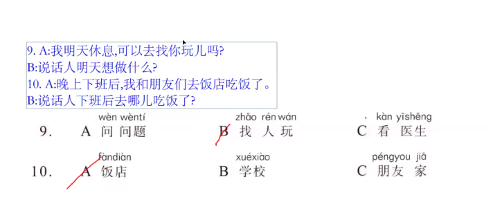
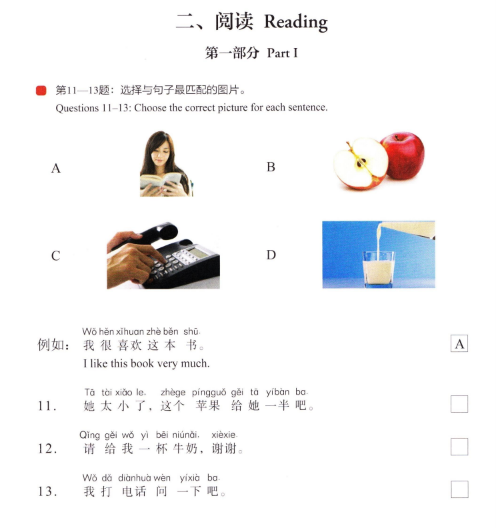
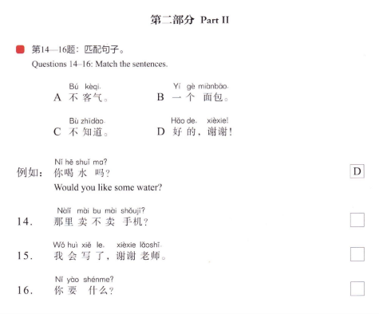
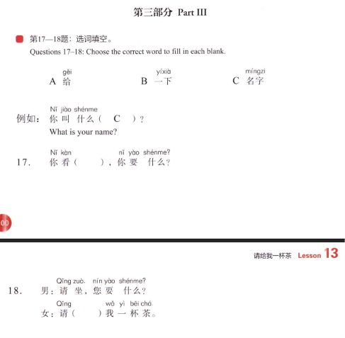
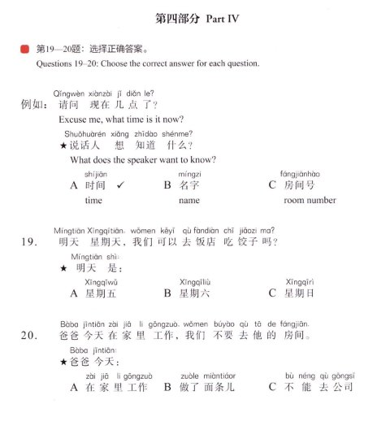

📌 一、语音 Pronunciation · 1 声调辨析 Tone Distinction (Audio 13-1)
1
小语讲堂 · Xiaoyu's Classroom · 1 声调辨析 Tone Distinction
Mendengarkan rekaman audio (Audio 13-1) dan memilih suku kata/frasa yang memiliki pola nada berbeda (different tone) dalam setiap kelompok (A, B, atau C).

🎧Instruksi Soal 1 (Audio 13-1)
听录音，选出每组音节里声调不同的一个。
(Listen and choose the syllable with a different tone in each group / Dengarkan rekaman, lalu pilih suku kata dengan nada yang berbeda di setiap kelompok.)
💡 Klik kartu untuk mendengarkan lafal setiap opsi. Opsi dengan kotak merah adalah jawaban yang memiliki pola nada berbeda!
( 1 )Soal Nomor 1
2 Suku Kata (Disyllable)Jawaban: B
A🔊 Dengar
jiǎozi
饺子
pangsit (dumpling)
Nada 3 + Netral
B🔊 Dengar
shuǐguǒ
水果
buah-buahan (fruit)
Nada 3 + Nada 3 ✓ Beda
C🔊 Dengar
zǎoshang
早上
pagi hari (morning)
Nada 3 + Netral
💡 Pembahasan Soal (1): Pilihan A jiǎozi (饺子) dan pilihan C zǎoshang (早上) sama-sama memiliki pola Nada 3 + Nada Netral. Sedangkan B shuǐguǒ (水果) memiliki pola Nada 3 + Nada 3 (dibaca shuíguǒ). Maka B berbeda.
( 2 )Soal Nomor 2
2 Suku Kata (Disyllable)Jawaban: A
A🔊 Dengar
xuéxí
学习
belajar (study)
Nada 2 + Nada 2 ✓ Beda
B🔊 Dengar
fángjiān
房间
kamar / ruangan (room)
Nada 2 + Nada 1
C🔊 Dengar
míngtiān
明天
besok (tomorrow)
Nada 2 + Nada 1
💡 Pembahasan Soal (2): Pilihan B fángjiān (房间) dan C míngtiān (明天) keduanya berpola Nada 2 + Nada 1. Sedangkan A xuéxí (学习) berpola Nada 2 + Nada 2. Maka A berbeda.
( 3 )Soal Nomor 3
3 Suku Kata (Trisyllable)Jawaban: B
A🔊 Dengar
mǎibāozi
买包子
membeli bakpao
Nada 3 + 1 + Netral
B🔊 Dengar
xiěHànzì
写汉字
menulis aksara Hanzi
Nada 3 + 4 + 4 ✓ Beda
C🔊 Dengar
yǒubēizi
有杯子
memiliki cangkir/gelas
Nada 3 + 1 + Netral
💡 Pembahasan Soal (3): Pilihan A mǎibāozi (买包子) dan C yǒubēizi (有杯子) berpola Nada 3 + Nada 1 + Netral. Sedangkan B xiěHànzì (写汉字) berpola Nada 3 + Nada 4 + Nada 4. Maka B berbeda.
( 4 )Soal Nomor 4
3 Suku Kata (Trisyllable)Jawaban: C
A🔊 Dengar
mánggōngzuò
忙工作
sibuk bekerja
Nada 2 + 1 + 4
B🔊 Dengar
láishūdiàn
来书店
datang ke toko buku
Nada 2 + 1 + 4
C🔊 Dengar
zhǎotóngxué
找同学
mencari teman sekelas
Nada 3 + 2 + 2 ✓ Beda
💡 Pembahasan Soal (4): Pilihan A mánggōngzuò (忙工作) dan B láishūdiàn (来书店) keduanya berpola Nada 2 + Nada 1 + Nada 4. Sedangkan C zhǎotóngxué (找同学) berpola Nada 3 + Nada 2 + Nada 2. Maka C berbeda.
Mendengarkan rekaman audio, memilih kata yang sesuai dengan suku kata yang didengar, lalu membaca nyaring kata tersebut.
🎧Instruksi Soal 2
听录音，根据听到的音节选择对应的词语，并大声朗读。
(Listen, choose the word that matches the syllable you hear, then read aloud / Dengarkan rekaman, cocokkan suku kata pinyin bernomor (1)–(6) dengan kata Hanzi yang tepat, lalu lafalkan dengan lantang.)
例如 Contoh
( 1 ) nǐhǎo➔你好
Jawaban: ( 1 )
🔊 Suku Kata yang Didengar (音节):
1
nǐhǎo
halo (hello) · Nada 3 + Nada 3
Contoh
2
gōngsī
perusahaan (company) · Nada 1 + Nada 1
🔊
3
xiānsheng
tuan / bapak (sir / gentleman) · Nada 1 + Netral
🔊
4
gōngzuò
bekerja / pekerjaan (work) · Nada 1 + Nada 4
🔊
5
jiǎozi
pangsit (dumpling / jiaozi) · Nada 3 + Netral
🔊
6
péngyou
teman (friend) · Nada 2 + Netral
🔊
📖 Kata Hanzi & Kunci Jawaban (词语):
你好
nǐ hǎo (halo)
( 1 )
饺子
jiǎo zi (pangsit)
( 5 )
公司
gōng sī (perusahaan)
( 2 )
朋友
péng you (teman)
( 6 )
先生
xiān sheng (tuan / bapak)
( 3 )
工作
gōng zuò (bekerja / pekerjaan)
( 4 )
📌 二、汉字 · Aksara Tionghoa (Chinese Characters)
字
二、汉字 · Chinese Characters — 汉字书写（六）
Mengenal struktur aksara Mandarin (独体字 vs 合体字, serta 形声字), latihan struktur Kiri–Kanan & Kiri–Tengah–Kanan, serta menyalin kosakata — Sesuai HSK 1 Standard Course Workbook Bab 13 (Hal. 094–095).
1. Struktur Aksara🧱 认识汉字结构：独体字与合体字 · Mengenal Struktur Dasar Hanzi
1) 独体字 (Dútǐzì) — Aksara Tunggal
Aksara yang tersusun dari goresan dasar dan tidak dapat dipecah menjadi beberapa komponen atau radikal. Contoh:人 (goresan piě 丿 + nà ㇏), 口, 上, 下.
2) 合体字 (Hétǐzì) — Aksara Gabungan
Aksara yang terdiri dari dua atau lebih komponen/radikal. Contoh:认 (rèn) gabungan radikal 讠 + 人; serta 和, 什.
💡 形声字 (Xíngshēngzì) — Aksara Fono-Semantik
Aksara gabungan yang terdiri dari 形旁 (radikal makna) dan 声旁 (komponen bunyi). Radikal makna membantu menebak kategori arti, sedangkan komponen bunyi memberi petunjuk pelafalan:
• Contoh: 奶、姥、妈、姐、妹 — semuanya memiliki radikal kiri 女 (perempuan) sebagai penanda makna, dan komponen kanan 乃、老、马、且、未 sebagai petunjuk bunyi.
2 & 3. Latihan Menulis✍️ 学练合体字结构 & 抄写字词 · Praktik Struktur & Salin Kata
Mendengarkan frasa pendek (setiap rekaman diputar dua kali) dan memilih gambar yang tepat (Pilihan A, B, atau C).

🎧Instruksi Soal Listening Part 1 (Audio 13-2)
第 1—3 题：听短语，选择正确图片。每题听两次。
Questions 1–3: Listen to each phrase and choose the correct picture. Each phrase will be played twice.
(Pertanyaan 1–3: Dengarkan frasa pendek, lalu pilih gambar yang tepat. Setiap nomor diperdengarkan dua kali.)
💡 Klik tombol 🔊 Putar Audio pada setiap nomor, atau klik masing-masing kartu opsi untuk mendengarkan audio pelafalan Mandarin!
例
例如 Contoh Soal: 三个苹果 (sān gè píngguǒ · three apples)
Pilihan A
📚
书
shū
Buku (tumpukan buku)
Tumpukan buku pelajaran (buku)
Pilihan B
💻
电脑
diànnǎo
Komputer / Laptop
Sebuah laptop terbuka
Pilihan C
🍎🍎🍎
三个苹果
sāngèpíngguǒ
Tiga buah apel (three apples)
Tiga buah apel merah segar
✓ Kunci Contoh (C)
Pembahasan Contoh: Audio memperdengarkan frasa 三个苹果 (sān gè píngguǒ = tiga buah apel). Gambar C menampilkan 3 buah apel merah, sehingga jawaban yang benar adalah C ✓.
1
Nomor 1: Makanan & Hidangan (拉面 vs 米饭 vs 一些饺子)
Pilihan A
🍜
拉面
lāmiàn
Mie ramen / mie tarik
Semangkuk mie kuah lengkap dengan irisan daging, telur rebus, jagung, dan sayuran
Pilihan B
🍚
米饭
mǐfàn
Nasi putih
Semangkuk penuh nasi putih hangat
Pilihan C
🥟
一些饺子
yìxiējiǎozi
Beberapa pangsit (some dumplings)
Sepiring penuh pangsit rebus (jiaozi) yang tersaji di atas piring putih
✓ Kunci Jawaban (C)
Pembahasan Soal 1: Rekaman audio memperdengarkan frasa 一些饺子 (yìxiē jiǎozi = beberapa pangsit). Gambar C menampilkan sepiring pangsit (饺子 jiǎozi). Gambar A adalah 拉面 (lāmiàn = mie ramen/mie tarik) dan gambar B adalah 米饭 (mǐfàn = nasi). Oleh karena itu, jawaban yang tepat adalah C.
2
Nomor 2: Aktivitas Memberi & Menyambut (给你书 vs 倒茶 vs 握手/介绍)
Pilihan A
📘🤝
给你书
gěinǐshū
Memberi kamu buku (give you a book)
Seorang pria berjas mengulurkan tangan memberikan sebuah buku kepada anak laki-laki
✓ Kunci Jawaban (A)
Pilihan B
🫖🍵
倒茶
dàochá
Menuang teh
Teko kaca menuangkan teh hangat ke dalam cangkir-cangkir kecil
Pilihan C
🤝💼
握手 / 介绍
wòshǒu / jièshào
Menjabat tangan / Memperkenalkan
Dua pria berjas berjabat tangan sementara seorang wanita di samping memperkenalkan
Pembahasan Soal 2: Rekaman audio memperdengarkan frasa 给你书 (gěi nǐ shū = memberi kamu buku). Gambar A memperlihatkan seorang pria menyerahkan buku kepada seorang anak. Gambar B adalah 倒茶 (dàochá = menuang teh) dan gambar C adalah 握手 / 介绍 (wòshǒu / jièshào = berjabat tangan / memperkenalkan). Jadi, jawaban yang tepat adalah A.
3
Nomor 3: Aktivitas Sehari-hari (买花 vs 聊天 vs 打电话)
Pilihan A
💐🛒
买花
mǎihuā
Membeli bunga
Seorang wanita memegang pot tanaman bunga di toko/taman bunga
Pilihan B
🗣️💬
聊天
liáotiān
Mengobrol / berbincang
Dua wanita pekerja kantoran sedang berdiri mengobrol sambil membawa tablet dan kopi
Pilihan C
☎️👔
打电话
dǎdiànhuà
Menelepon (make a phone call)
Seorang pria berjas di meja resepsionis sedang berbicara menggunakan gagang telepon
✓ Kunci Jawaban (C)
Pembahasan Soal 3: Rekaman audio memperdengarkan frasa 打电话 (dǎ diànhuà = menelepon). Gambar C memperlihatkan seorang pria di meja kerja sedang mengangkat gagang telepon dan berbicara. Gambar A adalah 买花 (mǎihuā = membeli bunga) dan gambar B adalah 聊天 (liáotiān = mengobrol). Maka dari itu, jawaban yang benar adalah C.
📝Catatan Kosakata Tambahan Sesuai Lembar Latihan (词汇笔记)
Makanan
拉面(lāmiàn)
Mie ramen / mie tarik
Makanan
米饭(mǐfàn)
Nasi putih
Makanan (Kunci Soal 1)
一些饺子(yìxiējiǎozi)
Beberapa pangsit
Frasa (Kunci Soal 2)
给你书(gěinǐshū)
Memberi kamu buku
Aktivitas
倒茶(dàochá)
Menuang teh
Aktivitas
握手(wòshǒu)
Menjabat tangan
Kata Kerja
介绍(jièshào)
Memperkenalkan
Aktivitas
买花(mǎihuā)
Membeli bunga
Aktivitas
聊天(liáotiān)
Ngobrol / berbincang
Aktivitas (Kunci Soal 3)
打电话(dǎdiànhuà)
Menelepon
📌 二、听力 · Listening Part 2: 第二部分 (Soal 4–5)
问
Part 2 · 第二部分 (第 4—5 题 · 🔊 Audio 13-3)
Mendengarkan pertanyaan dari rekaman audio, lalu memilih jawaban yang tepat (Pilihan A, B, atau C). Setiap soal diputar dua kali.

🎧Instruksi Soal Listening Part 2 (Audio 13-3)
第 4—5 题：听问题，选择正确回答。每题听两次。
Questions 4–5: Listen to each question and choose the correct answer. Each question will be played twice.
(Pertanyaan 4–5: Dengarkan pertanyaan, lalu pilih jawaban yang tepat. Setiap nomor diperdengarkan dua kali.)
💡Klik banner pertanyaan atau tombol 🔊 untuk mendengar rekaman audio soal, dan klik kartu opsi untuk mendengar pelafalan jawaban!
Bagaimana cuaca hari ini? (How is the weather today?)
Pilihan A
☀️🌡️
非常热
fēichángrè
Sangat panas (very hot)
✓ Kunci Contoh (A)
Pilihan B
🎵🎶
很好听
hěnhǎotīng
Sangat enak didengar / merdu
Jawaban untuk lagu / suara musik (sounds beautiful)
Pilihan C
🥤💧
在喝水
zàihēshuǐ
Sedang minum air (drinking water)
Jawaban untuk aktivitas orang yang sedang minum
Pembahasan Contoh: Pertanyaan menanyakan kondisi cuaca hari ini (今天天气怎么样？). Jawaban yang logis dan tepat untuk mendeskripsikan cuaca adalah A. 非常热 (fēicháng rè = sangat panas). Pilihan B 很好听 digunakan untuk suara/musik, dan pilihan C 在喝水 digunakan untuk aktivitas orang sedang minum.
Permisi, Anda mau minum apa? (Excuse me, what would you like to drink?)
Pilihan A
🤲📦
给你
gěinǐ
Ini untukmu / Berikan padamu
Ungkapan saat menyerahkan sesuatu kepada seseorang
Pilihan B
🥐🍳
吃早饭
chīzǎofàn
Makan sarapan
Aktivitas makan pagi, tidak menjawab pertanyaan tentang minuman (喝什么)
Pilihan C
🍵✨
要一杯茶
yàoyìbēichá
Mau secangkir teh (a cup of tea)
Jawaban langsung untuk memesan/memilih minuman teh
✓ Kunci Jawaban (C)
Pembahasan Soal 4: Rekaman audio menanyakan pilihan minuman dengan sopan (请问您喝什么？ = Permisi, Anda mau minum apa?). Jawaban yang tepat adalah C. 要一杯茶 (yào yì bēi chá = mau secangkir teh). Pilihan A 给你 (ini untukmu) dan pilihan B 吃早饭 (makan sarapan) tidak menjawab pertanyaan tentang minuman apa yang ingin diminum. Jadi, jawaban yang tepat adalah C.
Bolehkah saya menelepon? (May I make a phone call?)
Pilihan A
📖✍️
学习
xuéxí
Belajar
Kata kerja aktivitas belajar, tidak menjawab permintaan izin
Pilihan B
❌🙅
不对
búduì
Tidak benar / Salah
Respons untuk menyatakan pernyataan/jawaban salah, bukan menolak izin
Pilihan C
👌✅
没问题
méiwèntí
Tidak masalah / Boleh saja (no problem)
Ungkapan lazim untuk menyetujui atau memberikan izin atas permintaan seseorang
✓ Kunci Jawaban (C)
Pembahasan Soal 5: Pertanyaan meminta izin dengan pola 可以……吗？ (我可以打电话吗？ = Bolehkah saya menelepon?). Jawaban yang natural dan tepat untuk memberikan izin adalah C. 没问题 (méi wèntí = tidak masalah / boleh). Pilihan A 学习 (belajar) dan pilihan B 不对 (salah/tidak benar) tidak sesuai untuk merespons permintaan izin. Oleh karena itu, jawaban yang tepat adalah C.
📌 二、听力 · Listening Part 3: 第三部分 (Soal 6–8)
话
Part 3 · 第三部分 (第 6—8 题 · 🔊 Audio 13-4)
第6—8题：听对话，选择最匹配的图片。每题听两次。(Questions 6–8: Listen to each dialogue and choose the correct picture. Each dialogue will be played twice).

🎧Instruksi Soal Listening Part 3 (Audio 13-4)
第 6—8 题：听对话，选择最匹配的图片。每题听两次。
Bahasa Inggris: Questions 6–8: Listen to each dialogue and choose the correct picture. Each dialogue will be played twice. Bahasa Indonesia: Pertanyaan 6–8: Dengarkan percakapan antara pembicara A dan B, lalu pilih gambar (A, B, C, atau D) yang paling cocok.
💡 Klik kartu gambar atau baris dialog untuk memutar audio pelafalan native Mandarin!
🖼️ Pilihan Gambar Acuan Buku (A, B, C, D):
Gambar A
🤝👔
握手见面(wòshǒu jiànmiàn)
Dua orang berjabat tangan (Opsi Pengecoh)
Gambar B ✓
🥟🥢
吃饺子(chī jiǎozi)
Sepiring pangsit (饺子) di atas meja makan (Kunci Soal 8)
Gambar C ✓
🥖👐
一半面包(yíbàn miànbāo)
Tangan membelah roti menjadi setengah bagian (Kunci Soal 6)
A: Apakah kamu sudah makan sarapan? Mau makan roti?
B：谢谢！给我一半吧。
Xièxie! Gěi wǒ yíbàn ba.
B: Terima kasih! Beri saya setengahnya saja.
Pembahasan Soal 6: Kata kunci pada dialog adalah 面包 (miànbāo = roti) dan 一半 (yíbàn = setengah). Gambar yang paling tepat adalah Gambar C yang memperlihatkan roti yang dibelah menjadi dua bagian.
7
Soal No. 7: Memesan Secangkir Teh
🍵 Kunci Jawaban: Gambar D ✓
A：请问，您要点儿什么？
Qǐngwèn, nín yào diǎnr shénme?
A: Permisi, Anda mau pesan apa?
B：请给我一杯茶吧。
Qǐng gěi wǒ yì bēi chá ba.
B: Tolong beri saya secangkir teh.
Pembahasan Soal 7: Dialog menggambarkan situasi memesan minuman di kafe/restoran: pelayan bertanya 您要点儿什么？ (Anda mau pesan apa?) dan pelanggan memesan 一杯茶 (secangkir teh). Gambar yang sesuai adalah Gambar D.
8
Soal No. 8: Pangsit (饺子) di Restoran
🥟 Kunci Jawaban: Gambar B ✓
A：你觉得这家店怎么样？
Nǐ juéde zhè jiā diàn zěnmeyàng?
A: Bagaimana pendapatmu tentang restoran/toko ini?
B：我觉得这儿的饺子很好吃。
Wǒ juéde zhèr de jiǎozi hěn hǎochī.
B: Menurut saya pangsit di sini sangat enak.
Pembahasan Soal 8: Kata kunci pada percakapan adalah 饺子 (jiǎozi = pangsit) dan 很好吃 (sangat enak). Gambar yang paling sesuai adalah Gambar B yang menampilkan sepiring pangsit di atas meja.
📌 二、听力 · Listening Part 4: 第四部分 (Soal 9–10)
听
Part 4 · 第四部分 (第 9—10 题 · 🔊 Audio 13-5)
第9—10题：听句子，选择正确答案。每题听两次。(Questions 9–10: Listen to each sentence and choose the correct answer. Each sentence will be played twice).

🎧Instruksi Soal Listening Part 4 (Audio 13-5)
第 9—10 题：听句子，选择正确答案。每题听两次。
Bahasa Inggris: Questions 9–10: Listen to each sentence and choose the correct answer. Each sentence will be played twice. Bahasa Indonesia: Pertanyaan 9–10: Dengarkan kalimat yang diperdengarkan beserta pertanyaannya, lalu pilih jawaban yang benar (A, B, atau C).
💡 Klik kalimat audio, pertanyaan, atau pilihan jawaban untuk mendengarkan pelafalan native Mandarin!
9
Soal No. 9: Rencana Hari Libur Besok
Kalimat Audio (A):
我明天休息，可以去找你玩儿吗？
Wǒ míngtiān xiūxi, kěyǐ qù zhǎo nǐ wánr ma?
Besok saya libur, bolehkah saya pergi mencarimu untuk bermain?
Pertanyaan Audio (B):
说话人明天想做什么？
Shuōhuàrén míngtiān xiǎng zuò shénme?
Apa yang ingin dilakukan pembicara besok?
A. 问问题(wèn wèntí)= Bertanya pertanyaan
B. 找人玩(zhǎo rén wán)= Mencari teman bermain✓
C. 看医生(kàn yīshēng)= Pergi ke dokter
Pembahasan Soal 9: Pembicara berkata 可以去找你玩儿吗？ (kěyǐ qù zhǎo nǐ wánr ma? = bolehkah saya pergi mencarimu untuk bermain?). Jadi jawaban yang tepat adalah B. 找人玩 (zhǎo rén wán).
10
Soal No. 10: Makan Setelah Pulang Kerja
Kalimat Audio (A):
晚上下班后，我和朋友们去饭店吃饭了。
Wǎnshang xiàbān hòu, wǒ hé péngyoumen qù fàndiàn chīfàn le.
Malam hari setelah pulang kerja, saya dan teman-teman pergi ke restoran untuk makan.
Pertanyaan Audio (B):
说话人下班后去哪儿吃饭了？
Shuōhuàrén xiàbān hòu qù nǎr chīfàn le?
Ke mana pembicara pergi makan setelah pulang kerja?
A. 饭店(fàndiàn)= Restoran✓
B. 学校(xuéxiào)= Sekolah
C. 朋友家(péngyou jiā)= Rumah teman
Pembahasan Soal 10: Kalimat menyebutkan secara langsung bahwa pembicara dan teman-temannya 去饭店吃饭了 (qù fàndiàn chīfàn le = pergi ke restoran untuk makan). Jadi jawaban yang tepat adalah A. 饭店 (fàndiàn).
📌 二、阅读 · Reading Part 1: 第一部分 (Soal 11–13)
阅
Reading Part 1 · 第一部分 (第 11—13 题)
第11—13题：选择与句子最匹配的图片。(Questions 11–13: Choose the correct picture for each sentence / Pilih gambar yang paling cocok untuk setiap kalimat).

📖Petunjuk & Format Soal Reading Part 1
第11—13题：选择与句子最匹配的图片。
Bahasa Inggris: Questions 11–13: Choose the correct picture for each sentence. Bahasa Indonesia: Pertanyaan 11–13: Bacalah setiap kalimat, lalu tentukan gambar (A, B, C, atau D) yang paling sesuai.
💡 Klik kartu gambar atau baris kalimat untuk mendengarkan pelafalan audio dengan suara penutur asli!
🖼️ Pilihan Gambar Tersedia (A — D):
Gambar A (Contoh)
📖👩
看书(kàn shū)
Wanita sedang membaca buku (Kunci Contoh)
Gambar B ✓
🍎🔪
一半苹果(yíbàn píngguǒ)
Apel merah utuh dan apel yang dibelah setengah (Kunci Soal 11)
Gambar C ✓
☎️👆
打电话(dǎ diànhuà)
Tangan menekan tombol telepon meja (Kunci Soal 13)
Gambar D ✓
🥛🫗
一杯牛奶(yì bēi niúnǎi)
Susu dituangkan ke dalam gelas (Kunci Soal 12)
例如 (Contoh Soal)
📖 Kunci Contoh: Gambar A ✓
我很喜欢这本书。
Wǒ hěn xǐhuan zhè běn shū.
Arti Terjemahan: Saya sangat menyukai buku ini. (I like this book very much.)
Pembahasan Contoh: Kalimat menyebutkan 我很喜欢这本书 (Wǒ hěn xǐhuan zhè běn shū = Saya sangat menyukai buku ini). Gambar yang paling cocok adalah Gambar A yang memperlihatkan seorang wanita sedang membaca buku.
11
Soal No. 11: Memberikan Setengah Apel (她太小了，这个苹果给她一半吧。)
🍎 Kunci Jawaban: Gambar B ✓
她太小了，这个苹果给她一半吧。
Tā tài xiǎo le, zhège píngguǒ gěi tā yíbàn ba.
Arti Terjemahan: Dia masih terlalu kecil, berikan setengah apel ini untuknya saja. (She is too young; let's give her half of this apple.)
Pembahasan Soal 11: Kata kunci pada kalimat ini adalah 苹果 (píngguǒ = apel) dan 一半 (yíbàn = setengah). Gambar yang paling tepat adalah Gambar B yang memperlihatkan buah apel merah yang dibelah setengah.
12
Soal No. 12: Meminta Segelas Susu (请给我一杯牛奶，谢谢。)
🥛 Kunci Jawaban: Gambar D ✓
请给我一杯牛奶，谢谢。
Qǐng gěi wǒ yì bēi niúnǎi, xièxie.
Arti Terjemahan: Tolong beri saya segelas susu, terima kasih. (Please give me a glass of milk, thank you.)
Pembahasan Soal 12: Kalimat permintaan sopan 请给我一杯牛奶 (Qǐng gěi wǒ yì bēi niúnǎi) memiliki kata kunci 一杯牛奶 (segelas susu). Gambar yang paling sesuai adalah Gambar D yang memperlihatkan susu sedang dituangkan ke dalam gelas.
13
Soal No. 13: Menelepon untuk Bertanya (我打电话问一下吧。)
☎️ Kunci Jawaban: Gambar C ✓
我打电话问一下吧。
Wǒ dǎ diànhuà wèn yíxià ba.
Arti Terjemahan: Biar saya menelepon untuk menanyakannya sebentar. (Let me make a phone call to ask.)
Pembahasan Soal 13: Kalimat ini menggunakan frasa inti Bab 13 yaitu 打电话 (dǎ diànhuà = menelepon) dan 问一下 (wèn yíxià = bertanya sebentar). Gambar yang paling cocok adalah Gambar C yang memperlihatkan seseorang sedang menekan tombol telepon meja.
📌 二、阅读 · Reading Part 2: 第二部分 (Soal 14–16)
阅
Reading Part 2 · 第二部分 (第 14—16 题)
第14—16题：匹配句子。(Questions 14–16: Match the sentences / Pasangkan pertanyaan dengan respon kalimat yang paling sesuai).

📋Petunjuk & Format Soal Reading Part 2
第14—16题：匹配句子。
Bahasa Inggris: Questions 14–16: Match the sentences. Bahasa Indonesia: Pertanyaan 14–16: Pasangkan setiap kalimat dengan respon yang paling sesuai (A, B, C, atau D).
💡 Klik kartu respon atau baris kalimat untuk mendengarkan audio pelafalan alami Mandarin!
📦 Pilihan Respon Tersedia (A — D):
A:不客气。
Bú kèqi.
– Sama-sama / Tidak perlu sungkan.
B:一个面包。
Yí gè miànbāo.
– Sebuah roti.
C:不知道。
Bù zhīdào.
– Tidak tahu.
D:好的，谢谢！Contoh (D)
Hǎo de, xièxie!
– Baik, terima kasih! (Jawaban Contoh)
例如 (Contoh Soal)
Kalimat Tanya Contoh:
你喝水吗？
Nǐ hē shuǐ ma?
Arti Terjemahan: Apakah kamu mau minum air? (Would you like some water?)
Jawaban Lembar Buku: D ✓
D: 好的，谢谢！(Hǎo de, xièxie!) – Baik, terima kasih!
Pembahasan Contoh: Saat ditawari minuman 你喝水吗？ (Apakah kamu mau minum air?), respon yang paling sopan dan sesuai adalah D. 好的，谢谢！ (Baik, terima kasih!).
Arti Terjemahan: Apakah di sana menjual ponsel atau tidak?
👉 Pasangan Respon: C. 不知道。(Bù zhīdào.) – Tidak tahu.
Pembahasan Soal 14: Pertanyaan menanyakan informasi apakah suatu tempat menjual ponsel atau tidak (卖不卖手机). Respon yang paling sesuai dari pilihan yang tersedia adalah C. 不知道 (Tidak tahu), persis seperti dialog Teks 1 Bab 13.
15
Soal No. 15: Ucapan Terima Kasih kepada Guru (我会写了，谢谢老师。)
🙏 Kunci Jawaban: A ✓
我会写了，谢谢老师。
Wǒ huì xiě le, xièxie lǎoshī.
Arti Terjemahan: Saya sudah bisa menulisnya, terima kasih guru.
👉 Pasangan Respon: A. 不客气。(Bú kèqi.) – Sama-sama.
Pembahasan Soal 15: Kalimat diakhiri dengan ucapan terima kasih 谢谢老师 (Terima kasih guru). Balasan standar yang tepat atas ucapan terima kasih adalah A. 不客气 (Sama-sama / Tidak perlu sungkan).
👉 Pasangan Respon: B. 一个面包。(Yí gè miànbāo.) – Sebuah roti.
Pembahasan Soal 16: Pertanyaan 你要什么？ (Kamu mau apa?) menggunakan kata tanya benda 什么 (apa), sehingga membutuhkan jawaban berupa benda yang diinginkan yaitu B. 一个面包 (Sebuah roti).
📌 二、阅读 · Reading Part 3: 第三部分 (Soal 17–18)
填
Reading Part 3 · 第三部分 (第 17—18 题)
第17—18题：选词填空。(Questions 17–18: Choose the correct word to fill in each blank / Pilih kata yang tepat untuk melengkapi bagian rumpang).

✏️Petunjuk & Format Soal Reading Part 3
第17—18题：选词填空。
Bahasa Inggris: Questions 17–18: Choose the correct word to fill in each blank. Bahasa Indonesia: Pertanyaan 17–18: Pilihlah kata yang paling tepat untuk mengisi bagian rumpang dalam kalimat.
💡 Klik kartu kata atau baris kalimat untuk mendengarkan audio pelafalan alami Mandarin!
📦 Pilihan Kosakata Tersedia (A — C):
A:给(gěi)= memberi
B:一下(yíxià)= sebentar / sekali
C:名字(míngzi)= nama
CONTOH例如 (Lìrú)
Kunci Contoh: [ C ✓ ] (名字 / míngzi)
你叫什么名字？
Nǐ jiào shénme míngzi?
Arti Terjemahan: Siapa namamu? (What is your name?)
🔊 Klik untuk mendengarkan lafal kalimat lengkap
💡 Penjelasan Contoh: Pola baku untuk menanyakan nama seseorang adalah 你叫什么名字？ (Nǐ jiào shénme míngzi?). Kata yang tepat untuk mengisi bagian rumpang adalah C (名字 / míngzi = nama).
17Soal No. 17: Struktur Kata Kerja + 一下 (你看（一下），你要什么？)
Kunci: B ✓
你看一下，你要什么？
Nǐ kàn yíxià, nǐ yào shénme?
Arti Terjemahan: Coba lihat sebentar, kamu mau apa?
🔊 Klik untuk mendengarkan lafal kalimat lengkap
💡 Pembahasan Soal 17: Mengikuti tata bahasa Bab 13 (Kata Kerja + 一下 untuk menyatakan tindakan singkat atau nada bicara yang santai/sopan), kata kerja 看 (kàn = melihat) dipasangkan dengan B. 一下 (yíxià = sebentar) → 你看一下 (Coba lihat sebentar).
18Soal No. 18: Memesan Secangkir Teh (给 · gěi)
男:请坐，您要什么？Qǐng zuò, nín yào shénme?
Arti Terjemahan: "Silakan duduk, Anda mau pesan apa?" (Please have a seat, what would you like?)
女:请给我一杯茶。Qǐng gěi wǒ yì bēi chá.
Arti Terjemahan: "Tolong ( beri ) saya secangkir teh." (Please give me a cup of tea.)
Pilihan Kata: A ✓给 (gěi = memberi)
💡 Pembahasan Soal 18: Kalimat ini merupakan judul sekaligus pola kalimat berobjek ganda Bab 13: 请 + 给 + 我 + 一杯茶 (Qǐng gěi wǒ yì bēi chá = Tolong beri saya secangkir teh). Jadi kata yang tepat adalah A. 给 (gěi = memberi).
📌 二、阅读 · Reading Part 4: 第四部分 (Soal 19–20)
答
Reading Part 4 · 第四部分 (第 19—20 题)
第19—20题：选择正确答案。(Questions 19–20: Choose the correct answer for each question / Baca pernyataan dan pertanyaan, lalu tentukan jawaban yang benar A, B, atau C).

📌Petunjuk & Format Soal Reading Part 4
第19—20题：选择正确答案。
Bahasa Inggris: Questions 19–20: Choose the correct answer for each question. Bahasa Indonesia: Pertanyaan 19–20: Bacalah kalimat pengantar, lalu jawab pertanyaan bertanda bintang (★) dengan memilih opsi A, B, atau C.
💡 Klik kalimat pengantar, pertanyaan, atau pilihan jawaban untuk mendengarkan audio pengucapan alami Mandarin!
例
例如 (Contoh Soal): Menanyakan Jam Saat Ini
Teks Pengantar · 句子:
请问现在几点了？
Qǐngwèn xiànzài jǐ diǎn le?
Arti Terjemahan: Permisi, sekarang jam berapa ya? (Excuse me, what time is it now?)
Pertanyaan Berbintang · 问:
★ 说话人想知道什么？
★ Shuōhuàrén xiǎng zhīdào shénme?
Arti Terjemahan: Apa yang ingin diketahui oleh pembicara? (What does the speaker want to know?)
A. 时间(shíjiān)= Waktu (time)✓
B. 名字(míngzi)= Nama (name)
C. 房间号(fángjiānhào)= Nomor kamar (room number)
💡 Pembahasan Contoh: Pembicara menanyakan 现在几点了？ (sekarang jam berapa?), yang berarti ia ingin mengetahui informasi tentang A. 时间 (shíjiān = waktu/jam).
19
Soal No. 19: Makan Pangsit di Restoran Besok (明天星期天，我们可以去饭店吃饺子吗？)
Arti Terjemahan: Besok hari Minggu, bolehkah kita pergi ke restoran makan pangsit?
Pertanyaan Berbintang · 问:
★ 明天是：
★ Míngtiān shì:
Arti Terjemahan: Besok adalah:
A. 星期五(Xīngqīwǔ)= Hari Jumat
B. 星期六(Xīngqīliù)= Hari Sabtu
C. 星期日(Xīngqīrì)= Hari Minggu✓
💡 Pembahasan Soal 19: Pada kalimat pengantar disebutkan 明天星期天 (Míngtiān Xīngqītiān = Besok hari Minggu). Dalam bahasa Mandarin, 星期天 (Xīngqītiān) memiliki arti yang sama persis dengan C. 星期日 (Xīngqīrì = Hari Minggu).
20
Soal No. 20: Ayah Bekerja di Rumah (爸爸今天在家里工作，我们不要去他的房间。)
Teks Pengantar · 句子:
爸爸今天在家里工作，我们不要去他的房间。
Bàba jīntiān zài jiā li gōngzuò, wǒmen búyào qù tā de fángjiān.
Arti Terjemahan: Ayah hari ini bekerja di rumah, kita jangan pergi ke kamarnya.
Pertanyaan Berbintang · 问:
★ 爸爸今天：
★ Bàba jīntiān:
Arti Terjemahan: Ayah hari ini:
A. 在家里工作(zài jiā li gōngzuò)= Bekerja di rumah✓
B. 做了面条儿(zuòle miàntiáor)= Membuat mi
C. 不能去公司(bù néng qù gōngsī)= Tidak bisa pergi ke kantor
💡 Pembahasan Soal 20: Kalimat menyatakan secara langsung bahwa 爸爸今天在家里工作 (Bàba jīntiān zài jiā li gōngzuò = Ayah hari ini bekerja di rumah). Jadi jawaban yang tepat adalah A. 在家里工作.
🗣️ 口语练习 4 · Latihan Speaking 4 (Kǒuyǔ Liànxí 4)
说
Part 1 · 听后重复 (Tīng hòu chóngfù · Ulangi Kalimat)
Dengarkan pelafalan setiap kalimat lalu ulangi secara mandiri (Nomor 1–5). Klik kartu atau tombol audio untuk memutar suara.
NOMOR 1第 1 句 · Rencana Bersama Teman
Wǒ jīntiān bú qù, yào hé péngyou wán.
我今天不去，要和朋友玩。
Arti: "Saya hari ini tidak pergi, mau bermain dengan teman."
今天 (jīntiān) = Hari ini不去 (bú qù) = Tidak pergi和 (hé) = Dengan / bersama朋友 (péngyou) = Teman玩 (wán) = Bermain
NOMOR 2第 2 句 · Kondisi Cuaca
Zhèlǐ de tiānqì bú tài hǎo, xiàyǔ le.
这里的天气不太好，下雨了。
Arti: "Cuaca di sini kurang bagus, sudah turun hujan."
这里 (zhèlǐ) = Di sini天气 (tiānqì) = Cuaca不太好 (bú tài hǎo) = Kurang bagus下雨了 (xiàyǔ le) = Sudah turun hujan
语音 Pronunciation · Panduan lengkap 8 pola intonasi (句调) dalam kalimat bahasa Mandarin: nada naik (升调 ↗) vs nada turun (降调 ↘) & penekanan kata (重读).
1
是非疑问句的句调 · Intonation of a Yes-No Question升调 ↗ (Intonasi Naik)
谓语部分重读，全句末为升调。 The predicate is stressed, and the end of the sentence has a rising intonation. (Bagian predikat diberi penekanan, dan akhir kalimat berintonasi naik ↗).
（1）你明天去学校吗？↗
Nǐ míngtiān qù xuéxiào ma?
Apakah besok kamu pergi ke sekolah? (Penekanan pada predikat: 去)
（2）他们都知道这件事吗？↗
Tāmen dōu zhīdào zhè jiàn shì ma?
Apakah mereka semua mengetahui hal ini? (Penekanan pada: 知道)
（3）你都听懂了吗？↗
Nǐ dōu tīngdǒng le ma?
Apakah kamu sudah mengerti semuanya? (Penekanan pada: 听懂)
2
陈述句的句调 · Intonation of a Declarative Sentence降调 ↘ (Intonasi Turun)
汉语的陈述句句调一般为降调。 Declarative sentences in Chinese usually have a falling intonation. (Kalimat pernyataan umumnya berintonasi turun ↘).
（1）我学习汉语。↘
Wǒ xuéxí Hànyǔ.
Saya belajar bahasa Mandarin.
（2）他是我的老师。↘
Tā shì wǒ de lǎoshī.
Beliau adalah guru saya.
（3）外边天气很好。↘
Wàibian tiānqì hěn hǎo.
Cuaca di luar sangat bagus.
3
汉语的基本句调 · Basic Intonations of Chinese Sentences升调 ↗ vs 降调 ↘
汉语的基本句调有两种：升调和降调。一般来说，疑问句读升调，陈述句读降调。 Generally speaking, interrogative sentences have a rising intonation (↗) and declarative sentences have a falling intonation (↘).
（1）他姓张？↗
Tā xìng Zhāng?
Marganya Zhang? (Bertanya / intonasi naik)
（2）他姓张。↘
Tā xìng Zhāng.
Marganya Zhang. (Pernyataan / intonasi turun)
（3）他不喜欢喝啤酒？↗
Tā bù xǐhuan hē píjiǔ?
Dia tidak suka minum bir? (Bertanya / intonasi naik)
（4）他不喜欢喝啤酒。↘
Tā bù xǐhuan hē píjiǔ.
Dia tidak suka minum bir. (Pernyataan / intonasi turun)
4
特指问句的句调 · Intonation of a Specific Question降调 ↘ (Kata Tanya Ditekankan)
疑问代词重读，重音之后全句句调逐渐下降。 The interrogative pronoun is stressed, and the intonation of the part following the stress falls gradually. (Kata tanya seperti 谁/多少/什么 ditekankan, lalu intonasi turun bertahap ↘).
（1）这是谁的笔？↘
Zhè shì shéi de bǐ?
Ini pulpen siapa? (Penekanan pada: 谁)
（2）你们学校有多少学生？↘
Nǐmen xuéxiào yǒu duōshao xuésheng?
Sekolah kalian ada berapa banyak siswa? (Penekanan pada: 多少)
（3）你在找什么？↘
Nǐ zài zhǎo shénme?
Kamu sedang mencari apa? (Penekanan pada: 什么)
5
正反问句的句调 · Intonation of an Affirmative-Negative Question降调 ↘ (Positif Ditekankan)
句中肯定部分重读，否定部分轻读，肯定否定重叠部分语速较快，重音后语调逐渐下降。 The affirmative part is stressed and the negative part is unstressed. The intonation falls gradually after the stress (↘).
（1）明天你去不去银行？↘
Míngtiān nǐ qù bu qù yínháng?
Besok kamu pergi ke bank atau tidak? (Penekanan pada 去 pertama)
（2）这件衣服你喜欢不喜欢？↘
Zhè jiàn yīfu nǐ xǐhuan bu xǐhuan?
Baju ini kamu suka atau tidak? (Penekanan pada 喜欢 pertama)
（3）十一点多了，你睡不睡觉？↘
Shíyī diǎn duō le, nǐ shuì bu shuìjiào?
Sudah lewat jam 11, kamu tidur atau tidak? (Penekanan pada 睡 pertama)
6
用 “吧” 和 “吗” 构成的疑问句的句调 · Questions with “吧” vs “吗”吧 ↘ vs 吗 ↗
用 “吧” 构成的疑问句的句调为降调，用 “吗” 构成的疑问句的句调为升调。 A question ending with “吧” has a falling intonation (↘), and one that ends with “吗” has a rising intonation (↗).
（1）这本书是你的吧？↘
Zhè běn shū shì nǐ de ba?
Buku ini milikmu, kan? (Turun)
这本书是你的吗？↗
Zhè běn shū shì nǐ de ma?
Apakah buku ini milikmu? (Naik)
（2）明天是星期二吧？↘
Míngtiān shì xīngqī èr ba?
Besok hari Selasa, kan? (Turun)
明天是星期二吗？↗
Míngtiān shì xīngqī èr ma?
Apakah besok hari Selasa? (Naik)
（3）你买票了吧？↘
Nǐ mǎi piào le ba?
Kamu sudah beli tiket, kan? (Turun)
你买票了吗？↗
Nǐ mǎi piào le ma?
Apakah kamu sudah beli tiket? (Naik)
7
祈使句的句调 · Intonation of an Imperative Sentence缓降 ↘ (Turun Halus)
语气委婉时，全句音高较低，第一个分句末尾语调略升，全句末尾语调缓降。 When the tone is polite, the whole sentence is said in a low pitch, ending in a smoothly falling intonation (↘).
（1）让我们休息休息吧。↘
Ràng wǒmen xiūxi xiūxi ba.
Mari kita beristirahat sebentar.
（2）快点儿下课吧。↘
Kuàidiǎnr xià kè ba.
Cepatlah selesai kelasnya.
（3）请坐吧。↘
Qǐng zuò ba.
Silakan duduk.
8
感叹句的句调 · Intonation of an Exclamatory Sentence降调 ↘ (Kalimat Seru)
汉语感叹句的句调一般为降调。 A Chinese exclamatory sentence usually has a falling intonation (↘). (Kalimat seru umumnya berintonasi turun ↘).